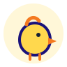
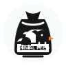
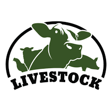

Animal Healthcare Services
Support for prevention, treatment and animal wellness.
- Health guidance
- Medication support
- Preventive care
From product supply to professional guidance, every service is built around healthier animals and stronger farm results.
Support for prevention, treatment and animal wellness.
Expert advice for pet, poultry and livestock health concerns.
Support for chicks, broilers, layers, feeding and vaccination schedules.
Practical assistance for daily operations and productivity decisions.

Reliable sourcing support for farmers starting or expanding poultry production.

Quality feed options for poultry, livestock and pets.
Trusted vaccines, medications and supplements for animal health.
Food, health and care products for dogs, cats and companion animals.
Hands-on learning for students, farm workers and new entrepreneurs.

Education for better livestock care, productivity and profit.